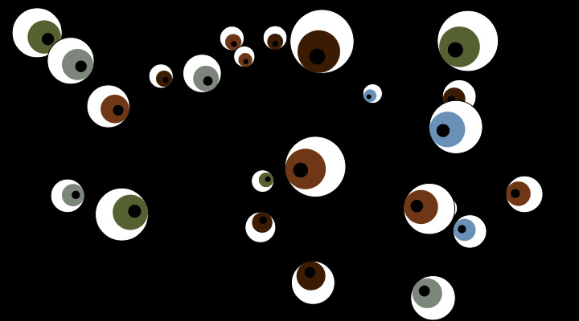
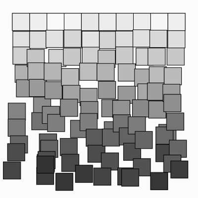

Arrays en objecten
In deze opdrachten ga je met arrays en objecten werken in de p5 editor. Geef elke opdracht een naam en bewaar ze.
Opdrachten
-
Opdracht 1

Kopiëer eerst onderstaande code en plak in de editor.
let eyes = []; let colors = ["#3b1c02","#556131","#6990b7","#7c867b","#6f3716"]; function setup() { createCanvas(720, 400); } function draw() { background(0); } function Eye(x, y, size, color) { this.x = x; this.y = y; this.size = size; this.color = color; this.angle = 0; this.draw = function(mx, my) { // berekent de hoek tussen dit object en de muispositie this.angle = atan2(my - this.y, mx - this.x); push(); translate(this.x, this.y); fill(255); stroke(0); ellipse(0, 0, this.size, this.size); rotate(this.angle); noStroke(); fill(this.color); ellipse(this.size / 6, 0, this.size / 1.5, this.size / 1.5); fill("#000000"); ellipse(this.size / 4, 0, this.size / 4, this.size / 4); pop(); }; }In deze opdracht ga je de gegeven object functie
Eyegebruiken om een aantal ogen te tekenen dat je muis volgt.- Maak in de
setupfunctie een aantal objecten aan van de gegeven functieEye. Geef de functie willekeurige waarden mee voor de x- en y-positie, diameter en kies voor de kleur een willekeurige waarde uit de colors array. Voeg de aangemaakte objecten toe aan de eyes array. - Vervolgens roep je in de
drawfunctie voor elk object diens eigen draw functie aan, met daarin de x- en y-positie van de muis.
- Maak in de
-
Opdracht 2

Kopiëer eerst onderstaande code en plak in de editor.
let border = 56; let squares = []; function setup() { createCanvas(400, 400); rectMode(CENTER); // objecten aanmaken en toevoegen aan squares array let size = 32; for (let x = border; x <= width - border; x += size) { for (let y = border; y <= height - border; y += size) { let offset = (y - border) / 16; let clr = 240 - offset * 10 + random(-10,10); let sq = new MovingSquare( x + random(-offset, offset), y + random(-offset, offset), size, clr ); squares.push(sq); } } } function draw() { clear(); // roept de draw functie in elk MovingSquare object aan for (let square of squares) square.draw(); }Deze code werkt nog niet - ReferenceError: MovingSquare is not defined. In deze opdracht ga je zelf een object functie
MovingSquareaanmaken en daarin code schrijven om elk vierkanje individueel te animeren. De vierkantjes moeten van boven naar beneden toe steeds harder gaan trillen.- Schrijf de functie
MovingSquaremet als parametersx,y,size en
color. - Schrijf de functie
- Schrijf hierin de functie
draw()om je vierkant te tekenen. Gebruik de parameters om het vierkant op de juiste positie, in de juiste grootte en kleur te tekenen. - De x- en y-positie moet nu telkens variëren, en steeds meer naarmate de y-positie hoger wordt. Gebruik hiervoor een variable
venrandom(-v, v).
Inleveren
Voor elke opdracht selecteer je Share in het File menu van de webeditor. Kies Edit en deel de link met je docent.